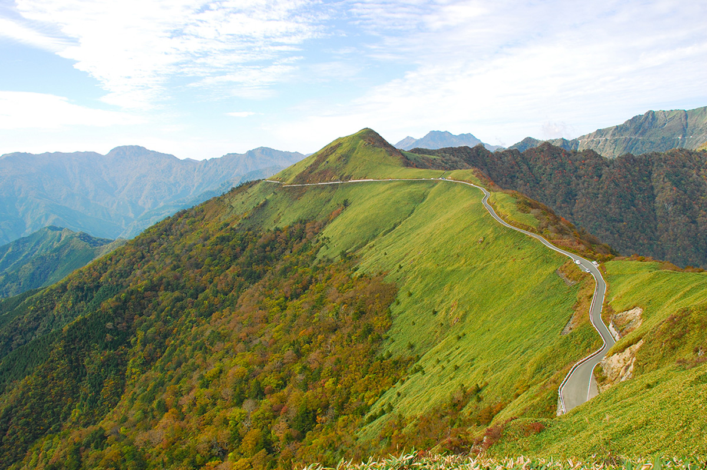

Префектура Коти · посёлок Ино · горная дорога
UFO-лайн: двадцать семь километров по гребню

Есть дороги, на которых хочется сбросить скорость: их красоту не вынести на полной. Трасса в западной части Коти как раз из таких: около 27 километров по кромке хребта, на высоте от 1300 до 1700 метров.
Дорога над облаками
Ехать к небу по кромке хребта
Дорога соединяет посёлок Ино в Коти с соседней префектурой Эхимэ. Официально это муниципальная трасса Камэгамори, но ездят сюда ради другого имени: UFO-лайн, «шоссе по небу». Гребень тянется через самое сердце Сикоку, и перед капотом всё время открывается то одна, то другая долина.
Лучшее время здесь осеннее: склоны вокруг Исидзути, высшей точки острова, и горы Камэгамори вспыхивают красным и золотым. По пути стоит остановиться у перевала Сираса: его буковый лес стоит отдельной поездки. А в ясную погоду с гребня видно, кажется, всё сразу: цепь гор по горизонтали и, вдали, блики Тихого океана.
Лёгкой дорогу не назовёшь. До ближайшей развязки автомагистрали ехать долго, само полотно узкое и петляет, поэтому руль требует внимания. Но именно этот контраст и есть суть UFO-лайн: усталость от поворотов с лихвой окупается видом, к которому трудно подобрать слова.
В путь
Когда ехать и что знать
Сезон и оценка обзора
Рекомендуемый сезон: осень. Оценка обзора: три звезды, высшая отметка: в хорошую погоду с гребня видно далеко во все стороны. Дорога полностью асфальтирована, но местами сужается до одной полосы; в период золотой недели и осеннего листопада бывает оживлённо, поэтому водителю стоит ехать спокойно и заранее.
Что рядом
Местная еда: говядина тоса ака-уси и аю. Рядом с трассой: гора Камэгамори и Исидзути, любимец альпинистов Сикоку.
UFO-лайн (муниципальная дорога Камэгамори)
- Адрес
- префектура Коти, уезд Агава, посёлок Ино, Тэракава
- Часы работы
- круглосуточно
- Сезон
- открыта примерно с середины апреля до конца ноября; зимой закрыта
- Цены
- бесплатно
- Как добраться
- от развязки Ино автомагистрали Коти около 1 часа 30 минут на машине
- Телефон
- +81 80-1477-3442 (горный инфопункт UFO-лайн)
- Сайт
- Instagram: @ufoline_info
Фото: посёлок Ино.